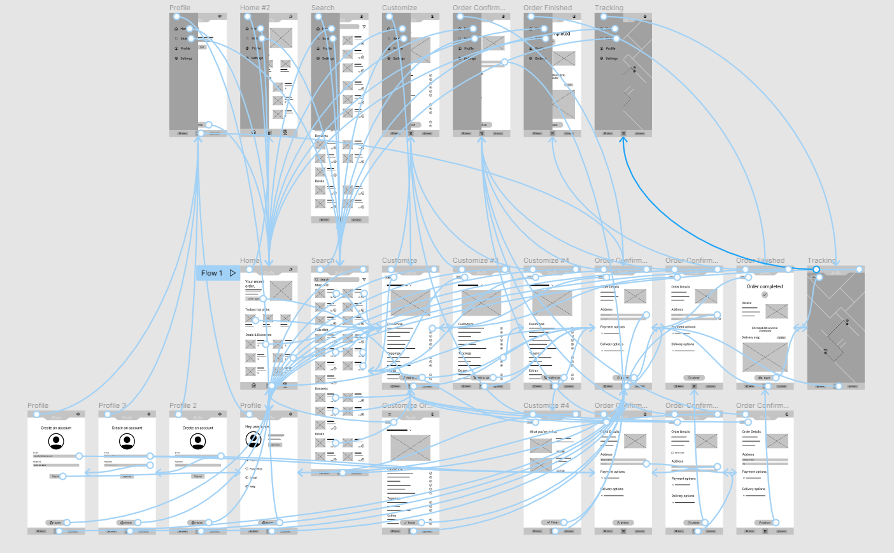

ITALIA
A Food Ordering App for an Italian Restaurant.
View Flow Prototype-

Role
UX/UI designer designing an app for food ordering and customization, from top to bottom.
-

Responsibilities
Conducting interviews, paper and digital wireframing, low and high-fidelity prototyping, conducting usability studies, accounting for accessibility, and iterating on designs.
-

Duration
November 2021 - December 2021

-
Problems
People with busy lives, long working hours lack the time to prepare meals and try out something new.
-
Goals
Design an app that allows people to order and customize, healthy and delicious food that comes right at their doorstep.
User research
I performed user research and went through empathy maps to understand the users I am designing for. Through my research primary groups were people with less time to cook meals and in need of quick and easy food delivery. This was an assumption I made going through, but with later research that wasn’t the only thing people were neglected with. Time was of the essence but so was getting groceries, reasons to not go in public places, cooking environments and so on.
User pain points
Time
Working adults have much less time to cook meals at home.
Accessibility #1
Other food ordering apps lack the details for meals and accessibility features for users.
Accessibility #2
Food ordering apps don’t have the option to customize for users liking.
IA
Cluttered UI gives users difficulty when trying to order.
Personas
Problem statement:
William is a hard working student who needs a way to order/eat healthy, customizable and diverse meals because he doesn’t have the time to cook for himself. Working adults have much less time to cook meals at home.
.png)
User Journey Map
.png)
Problem statement:
Researching Williams journey map, helped me figure out how a food ordering app with customization features would benefit users.
Paper Wireframes
While taking the time and drafting iterations on paper. I managed to deliver a fast and intuitive user screen that will later be in digital form and easily accessible by users.

Digital Wireframes
As the design continued I iterated on users opinions, behaviours and feedback.
.png)
The menu was inserted for easier coping and navigation through the app.
.png)
Low-Fidelity Prototype Flow
After finishing a detailed version of the wireframes I created a low-fidelity prototype that goes through the app flow as well as other aspects of it like the profile page, menu opens on every screen etc.
 View Low-fidelity PrototypeUsability Study: Findings
I conducted two usability studies that helped me make a better user experience and flow in the app. The first one served as to better the wireframes and low-fidelity prototypes and the second to finish the high-fidelity prototype and to see what needs refining.
-
Round 1
1. Users don't know how to add more items to the cart
2. Users want an amount feature so they can order more of the same meal
-
Round 2
1. Order success doesn't bring the user back to home
2. Difficulty in cart section
Mockups
Final results of everything procesed together!

Accessibility Considerations
1. Accessibility feature for foreign language speaking people, with change language function.
2. Using icons for Home button, Profile button for easier navigation and understanding.
3. Added detailed images of meals, so users can see exactly how it will look before ordering.
My Takeaways
-
Impact:
The app helps bring users and their needs together.
User feedback:
“Navigating through the app was very smooth, and especially choosing a meal I would like to order, with excellent customization options different for every type of meal.”
-
What I learned:
Designing my first UI/UX project helped me understand how users need to be in the center of the app, as well as understanding that the first designs aren’t the last. User feedback is really important and it helps the app to grow how it needs to be.
Thank you!
Thank you for taking the time to review my work on designing a food ordering customization app for an Italian restaurant! If you’d like to see more, have question or get in touch, my contact information is provided below.
E-mail: patrik.celjak101@gmail.com
Phone: +385 95 9142 501
Portfolio website: https://patrikceljak.github.io/portfolio/